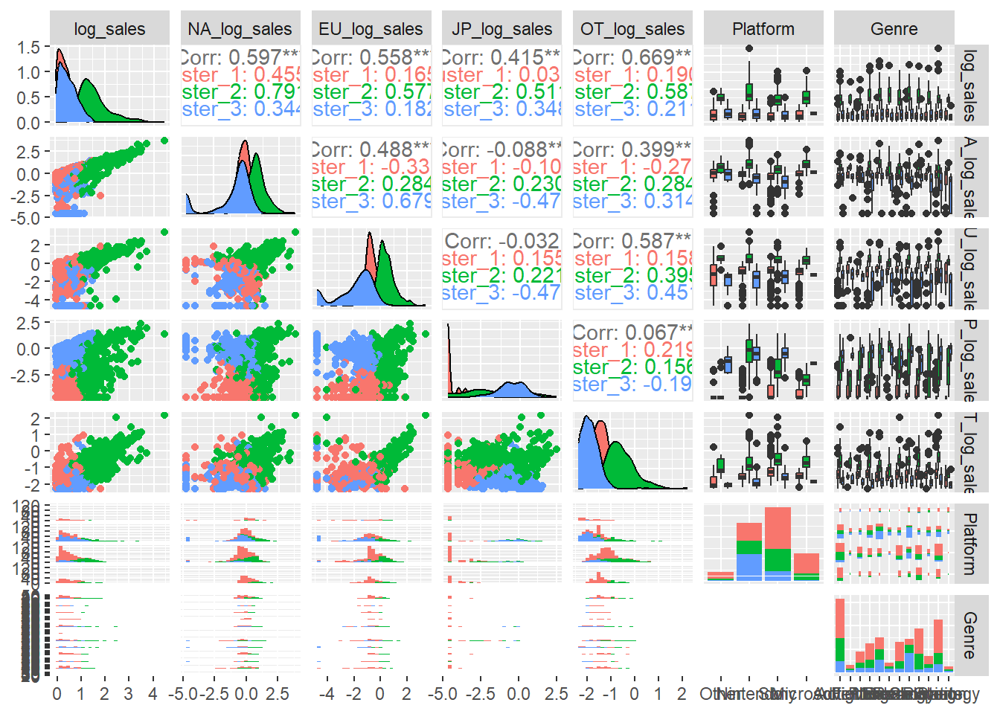
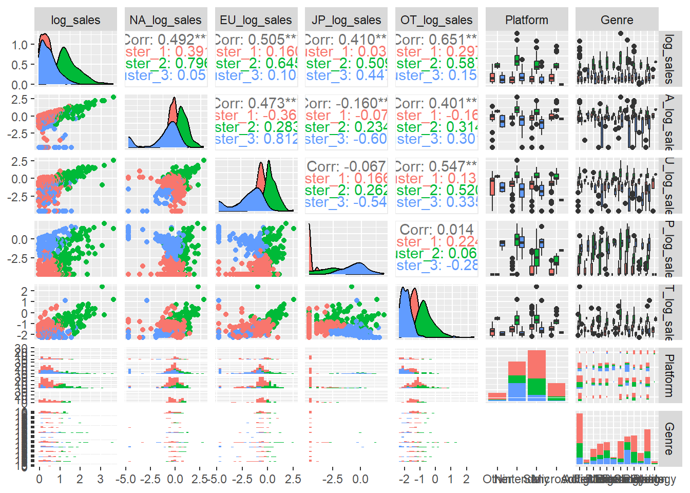
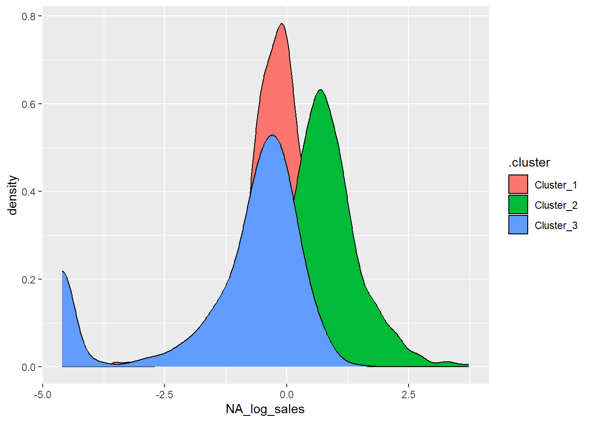
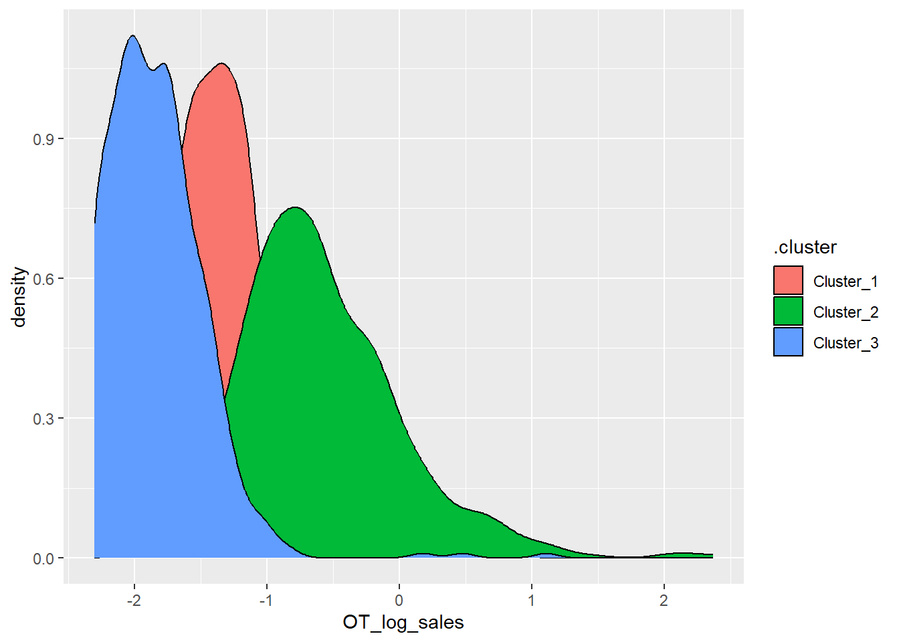
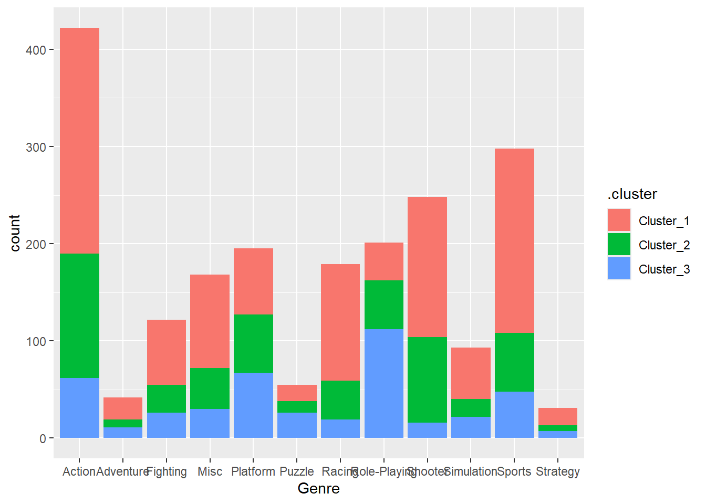

library(GGally)
library(tidyverse)
library(tidyclust)
library(tidymodels)
library(dplyr)
library(ggplot2)Data Wrangling and Modeling
Packages Used In This Analysis
GGally to get the ggpairs function
tidyclust to have a tidy interface for clustering models
dplyr to massage and summarize data
tidymodels for modeling
tidyverse for piping and altering data
ggplot2 for graphs in eda and clustering
Data Description
vgsales <- readr::read_csv("C:/Users/19493/Desktop/vgsales.csv")I got the dataset from a site called Kaggle.com and the data set analyzes sales data from over 16,000 games that had more than 100,000 global sales. The data itself was generated by a scrape of vgchartz.com, which is another website that goes into deep analysis about video games sales.
The Data has 11 different variables Rank is a games placement in sales, Name is the name of the game, Platform is which console said game came out on, Genre is the genre of the game, Publisher is who published the game, and the different Sales columns relate to how many copies the game sole in North America, Europe, Japan, all other territories, and final how many total copies were sold globally.
Data Limitations
The data only contains data until about 2016, so the data set itself is old and needs to be updated. There are a lot of outliers in the data itself (as you’ll see in a bit in EDA.
EDA
vgsales <- vgsales %>%
filter(Global_Sales > 1) %>%
mutate(log_sales = log(Global_Sales)) %>%
mutate(NA_log_sales = log(NA_Sales + 0.01)) %>%
mutate(EU_log_sales = log(EU_Sales + 0.01)) %>%
mutate(JP_log_sales = log(JP_Sales + 0.01)) %>%
mutate(OT_log_sales = log(Other_Sales + 0.1)) %>%
mutate(Platform = as.factor(Platform) |>
fct_collapse(
Sony = c("PS", "PS2", "PS3", "PS4", "PSP", "PSV"),
Microsoft = c("X360", "XB", "XOne"),
Nintendo = c("NES", "SNES", "Wii", "WiiU", "GC", "N64", "3DS", "DS", "GB", "GBA"),
Other = c("2600", "DC", "GEN", "PC", "SAT", "SCD")
))ggplot(data = vgsales,
aes(x = Year, y = Global_Sales)) + geom_boxplot()
ggplot(data = vgsales,
aes(x = Year, y = log_sales)) + geom_boxplot()
Modeling
vg_split <- initial_split(vgsales, prop = 0.75)
vg_train <- training(vg_split)
vg_test <- testing(vg_split)kmeans_recipe_fv <- recipe(~ log_sales + NA_log_sales + EU_log_sales + JP_log_sales + OT_log_sales + Platform + Genre,
data = vg_train) |>
step_YeoJohnson(all_numeric_predictors()) |> # deal with skew issues
step_normalize(all_numeric_predictors()) |> # deal with different variances
step_dummy(all_nominal_predictors(), one_hot = TRUE) |>
step_zv(all_predictors())This is the recipe used for Kmeans clustering
kmeans_model <- k_means(num_clusters = tune()) |>
set_args(nstart = 20)The cluster model
kmeans_wflow_fv <- workflow() |>
add_model(kmeans_model) |>
add_recipe(kmeans_recipe_fv)set.seed(1002)
fv_kfold_tidy <- vfold_cv(vg_train, v = 5, repeats = 1)
nclusters_grid <- data.frame(num_clusters = seq(1, 10))
kmeans_tuned_fv <- tune_cluster(kmeans_wflow_fv,
resamples = fv_kfold_tidy,
metrics = cluster_metric_set(sse_total,
sse_within_total, sse_ratio),
grid = nclusters_grid)! Fold2: preprocessor 1/1, model 7/10: did not converge in 10 iterations! Fold3: preprocessor 1/1, model 9/10: did not converge in 10 iterationstuned_metrics <- collect_metrics(kmeans_tuned_fv)
tuned_metrics |>
arrange(desc(.metric), num_clusters) |>
select(num_clusters, .metric, mean, everything())# A tibble: 30 × 7
num_clusters .metric mean .estimator n std_err .config
<int> <chr> <dbl> <chr> <int> <dbl> <chr>
1 1 sse_within_total 8051. standard 5 3.05 Preprocessor1_M…
2 2 sse_within_total 5903. standard 5 5.26 Preprocessor1_M…
3 3 sse_within_total 4894. standard 5 3.44 Preprocessor1_M…
4 4 sse_within_total 4434. standard 5 7.06 Preprocessor1_M…
5 5 sse_within_total 4078. standard 5 15.5 Preprocessor1_M…
6 6 sse_within_total 3810. standard 5 13.5 Preprocessor1_M…
7 7 sse_within_total 3581. standard 5 12.3 Preprocessor1_M…
8 8 sse_within_total 3404. standard 5 12.1 Preprocessor1_M…
9 9 sse_within_total 3245. standard 5 15.6 Preprocessor1_M…
10 10 sse_within_total 3118. standard 5 10.2 Preprocessor1_M…
# ℹ 20 more rowstuned_metrics |>
filter(.metric == "sse_ratio") |>
ggplot(aes(x = num_clusters, y = mean)) +
geom_point() +
geom_line() +
labs(x = "Number of Clusters", y = "Mean WSS/TSS (5 folds)") +
scale_x_continuous(breaks = seq(1, 10))kmeans_fv_3clusters <- kmeans_wflow_fv |>
finalize_workflow_tidyclust(parameters = list(num_clusters = 3))set.seed(1002)
# always reset the seed before you re-fit, just in case something weird happens
kmeans_fv_fit3 <- kmeans_fv_3clusters |>
fit(data = vg_train)vg3 <- bind_cols(
vg_train,
kmeans_fv_fit3 |> extract_cluster_assignment())
vg3 |>
select(Name, .cluster, everything())# A tibble: 1,540 × 17
Name .cluster Rank Platform Year Genre Publisher NA_Sales EU_Sales
<chr> <fct> <dbl> <fct> <chr> <chr> <chr> <dbl> <dbl>
1 Bad Boys: Mi… Cluster… 1767 Sony 2004 Shoo… Empire I… 0.56 0.44
2 Big Beach Sp… Cluster… 1086 Nintendo 2008 Spor… THQ 0.45 1.02
3 We Ski Cluster… 1053 Nintendo 2008 Spor… Namco Ba… 0.99 0.42
4 Imagine: Fas… Cluster… 1922 Nintendo 2008 Simu… Ubisoft 0.65 0.32
5 Crackdown 2 Cluster… 1822 Microso… 2010 Shoo… Microsof… 0.63 0.37
6 Skylanders G… Cluster… 1499 Microso… 2012 Acti… Activisi… 0.75 0.45
7 Battlefield 4 Cluster… 366 Microso… 2013 Shoo… Electron… 2.14 1.08
8 Lode Runner Cluster… 1859 Nintendo 1984 Puzz… Hudson S… 0 0
9 Buzz! The Mu… Cluster… 1147 Sony 2005 Misc Sony Com… 0 1.18
10 Cabela's Big… Cluster… 1050 Nintendo 2009 Spor… Activisi… 1.58 0
# ℹ 1,530 more rows
# ℹ 8 more variables: JP_Sales <dbl>, Other_Sales <dbl>, Global_Sales <dbl>,
# log_sales <dbl>, NA_log_sales <dbl>, EU_log_sales <dbl>,
# JP_log_sales <dbl>, OT_log_sales <dbl>library(GGally)
ggpairs(vg3, columns = c("log_sales", "NA_log_sales", "EU_log_sales", "JP_log_sales", "OT_log_sales", "Platform", "Genre"),
aes(color = .cluster))`stat_bin()` using `bins = 30`. Pick better value with `binwidth`.
`stat_bin()` using `bins = 30`. Pick better value with `binwidth`.
`stat_bin()` using `bins = 30`. Pick better value with `binwidth`.
`stat_bin()` using `bins = 30`. Pick better value with `binwidth`.
`stat_bin()` using `bins = 30`. Pick better value with `binwidth`.
`stat_bin()` using `bins = 30`. Pick better value with `binwidth`.
`stat_bin()` using `bins = 30`. Pick better value with `binwidth`.
`stat_bin()` using `bins = 30`. Pick better value with `binwidth`.
`stat_bin()` using `bins = 30`. Pick better value with `binwidth`.
`stat_bin()` using `bins = 30`. Pick better value with `binwidth`.
vg_predictions3 <- augment(kmeans_fv_fit3,
new_data = vg_test)
ggpairs(vg_predictions3, columns = c("log_sales", "NA_log_sales", "EU_log_sales", "JP_log_sales", "OT_log_sales", "Platform", "Genre"),
aes(color = .pred_cluster))`stat_bin()` using `bins = 30`. Pick better value with `binwidth`.
`stat_bin()` using `bins = 30`. Pick better value with `binwidth`.
`stat_bin()` using `bins = 30`. Pick better value with `binwidth`.
`stat_bin()` using `bins = 30`. Pick better value with `binwidth`.
`stat_bin()` using `bins = 30`. Pick better value with `binwidth`.
`stat_bin()` using `bins = 30`. Pick better value with `binwidth`.
`stat_bin()` using `bins = 30`. Pick better value with `binwidth`.
`stat_bin()` using `bins = 30`. Pick better value with `binwidth`.
`stat_bin()` using `bins = 30`. Pick better value with `binwidth`.
`stat_bin()` using `bins = 30`. Pick better value with `binwidth`.
vg_all_clusters3 <- bind_rows(
vg3,
vg_predictions3 |> rename(.cluster = .pred_cluster) # rename cluster variable name
)Insights
ggplot(data = vg_all_clusters3, mapping = aes(x = log_sales, fill = .cluster)) + geom_density()
ggplot(data = vg_all_clusters3, mapping = aes(x = NA_log_sales, fill = .cluster)) + geom_density()
ggplot(data = vg_all_clusters3, mapping = aes(x = EU_log_sales, fill = .cluster)) + geom_density()
ggplot(data = vg_all_clusters3, mapping = aes(x = JP_log_sales, fill = .cluster)) + geom_density()
ggplot(data = vg_all_clusters3, mapping = aes(x = OT_log_sales, fill = .cluster)) + geom_density()
ggplot(data = vg_all_clusters3, mapping = aes(x = Platform, fill = .cluster)) + geom_bar()
ggplot(data = vg_all_clusters3, mapping = aes(x = Genre, fill = .cluster)) + geom_bar()